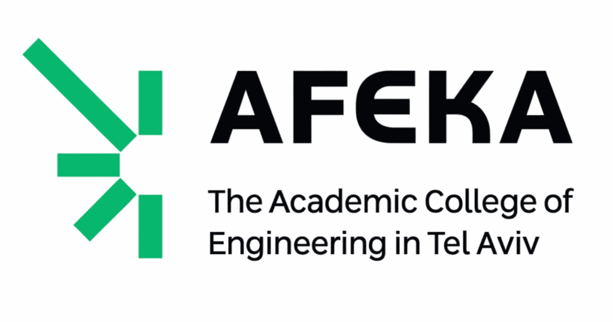

Teaching and Curriculum Development
Innovation-First Learning
Let’s be honest: what we teach in Computer Science and Software Engineering often doesn’t align with what the industry truly needs. Updating curricula for an AI-driven world is tough. Blending deep theory with modern tools into a single coherent learning path is a significant challenge. And to complicate things further, students now rely on AI both while learning and once they enter the workforce. These shifts raise difficult questions: Should we teach students to implement things they’ll never build without AI? Or should we ignore the fast-changing tool landscape and focus solely on deep theory?
After seeing this gap firsthand, both as a long-time educator and as someone with over 30 years of industry experience, regularly interviewing and hiring new graduates, I decided to try something new. Over the past year, I’ve built and taught courses in various AI disciplines (LLM, GenAI, Computer Vision) using an approach I call Innovation-First Learning (IFL). In my courses, theory and tools come together from day one, and students jump straight into substantial, technically deep projects that move far beyond simple exercises and into real innovation.

Hands-on AI Science Courses
Courses on different aspects of AI taught using the Innovation-First Learning (IFL) approach
List of available courses
Current and past offerings and students' projects

CS Degree Curriculum Design
While serving as Head of the Software Engineering track at the Holon Institute of Technology’s School of Computer Science, I prepared a proposal for a new Computer Science degree curriculum centered on the Innovation-First Learning (IFL) principles.
CS Graduate Readiness Profiles
I have established and led an industry advisory board to define essential requirements for two specific graduate-level roles. The board consists of professionals (and HIT graduates) who conduct first-line technical interviews with new graduates, and they worked together to articulate, share, and document their expectations.

Advising M.Sc. and B.Sc. Students
Over the past decade, I have advised B.Sc. and M.Sc. students @ Afeka College of Engineering on their final projects. Most of the projects address the problem I have encountered in my industry work. Below are some of my recent and current student projects.